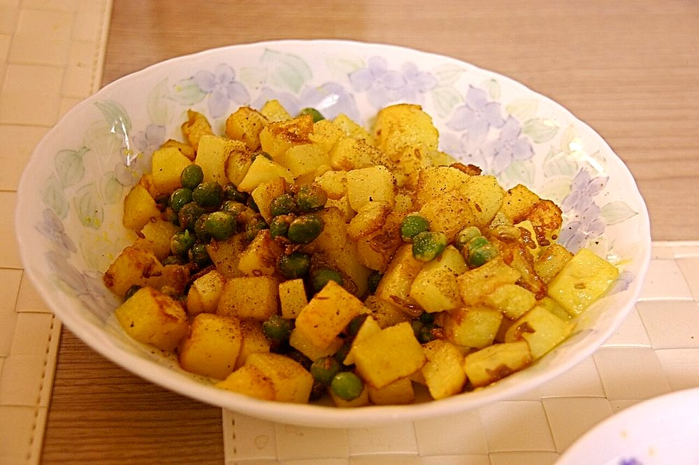

Allergens: none of the ten listed below
Ingredients
Quantities for 4.
- 500g, boiled, peeled and cut into 2cm cubes Potato
- 3 medium, very finely chopped Onionsong is really an onion dish with potato in it
- 6 Kashmiri, soaked 15 minutes Dried Red Chilli
- 2 tbsp Vinegarcoconut or palm vinegar if you have it
- 1/4 tsp Turmeric
- 3 cloves Garlicoptional
- 3 tbsp Coconut Oil
- 1/2 tsp Sugartakes the edge off the vinegaroptional
- 2 tbsp, chopped Coriander Leavesoptional
- to taste Salt
Cookware
stovetop, kadhai, blender
Checked against the ingredient list for ten allergens: milk, egg, fish, crustaceans, tree nuts, peanuts, sesame, mustard, soy and gluten. Brands vary, so read the label on anything new to you.
Before you start
- Boil the potatoes ahead and let them cool completely before cubing; warm potato crumbles into the gravy.
- Soak the dried chillies in hot water for 15 minutes so they grind smooth.
- Chop the onion as finely as you can manage. It has to melt, not stay in pieces.
Method
- Grind the soaked chillies with the garlic and 2 tbsp of the vinegar to a smooth thick paste. Use no water.Grinding in vinegar rather than water is what gives song its keeping quality and its sharp edge.
- Heat the coconut oil in a kadhai and fry the onion over medium heat 12-14 minutes, stirring often, until deep brown and jammy.This is the only real work in the dish. Stop at brown, not black. Burnt onion turns the whole pan bitter.
- Add the chilli paste and turmeric and fry 4 minutes until the raw vinegar smell burns off and oil shows at the edges.
- Add the potato cubes and turn them gently until every piece is coated red.
- Pour in 100ml hot water with the salt and sugar and simmer 5 minutes so the potato takes up the masala.
- Taste and add a splash more vinegar if it needs lifting. Song should be noticeably sour.
- Cook uncovered 2 minutes more to leave it thick and clinging rather than saucy, then scatter over the coriander.
Storage
Keeps 4 days refrigerated. The vinegar preserves it and the flavour sharpens. Reheat in a pan with a spoonful of water. Do not freeze.
Nutrition Medium estimate
Low protein: 4 g a serving, 7% of the calories
| Per serving236 g | Per 100 g | |
|---|---|---|
| Calories | 229 kcal | 98 kcal |
| Protein | 3.8 g | 2 g |
| Carbohydrate | 31.3 g | 13 g |
| of which sugars | 5.1 g | 2 g |
| Fibre | 4.3 g | 2 g |
| Fat | 10.4 g | 4 g |
| of which saturated | 8.5 g | 4 g |
| of which unsaturated | 0.9 g | 0 g |
Ingredients given to taste count as zero, so the real figures run a little higher. Estimated from raw ingredients using USDA FoodData Central.
More like this: Vegan Indian recipes · Vegetarian Indian recipes · Gluten-free Indian recipes · Dairy-free Indian recipes · Goan recipes
Times, yields, allergens and nutrition are guidance. Use your own judgement on doneness and on storing. More in About.